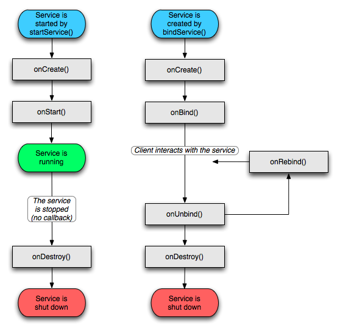

name: inverse layout: true class: center, middle, inverse --- # Android Background ENSSAT 2021-2022 Guillaume Châtelet --- layout:false ## plan - Threading - Service - IntentService - BroadcastReceiver - JobScheduler - Doze --- template: inverse # Threading "un thread pour les gourverner tous" --- # Notion de thread système Le système appelle les callbacks des activités en utilisant le .remark-code[Main thread] .green[Ce thread ne doit pas être utilisé trop longtemps par le code de l'application] Il faut faire tourner les tâches longues en tâche de fond .green[il n'est pas possible de modifier l'UI si on n'est pas dans le main thread] .green[implique une communication entre les tâches de fond et le main thread] --- ## Thread Api standard .remark-code[Thread fun launch() { val loop = 5 val t = Thread { for (i in 0..loop) { // do incredibly long computations } } t.start() } ] les variables internes doivent être finales. l'accès aux paramètres de la classe est possible .green[attention aux accès concurrents] --- ## Handler Les Handler permettent de gérer des messsages ou d'exécuter des Runnables dans le Thread où ils ont été créé. On peut demander un traitement immédiat ou dans le futur Chaque .remark-code[View] contient un .remark-code[Handler] ``` val handler = textView.handler fun setText(text: String) { handler.post { textView.text = text } } ``` On peut aussi créer un .remark-code[Handler] dans une .remark-code[Activity], il pourra modifier l'UI. ``` class MyActivity: Activity { val handler = Handler() ... } ``` --- ## AsyncTask Android fournit les .remark-code[AsyncTask] pour interagir avec l'UI pendant la tâche de fond. ``` class AsyncCreateString: AsyncTask<Long, Int, String>() { @WorkerThread override fun doInBackground(vararg params: Long?): String { var result = "" var progress = 0 // loop to create result publishProgress(progress) // end loop return result } @UiThread override fun onProgressUpdate(vararg values: Int?) { super.onProgressUpdate(*values) // update UI with the values } @UiThread override fun onPostExecute(result: String?) { super.onPostExecute(result) // update UI with the result } } ``` --- ## Executors Les implémentations actuelles utilisent plutôt un `AppExecutor` défini comme suit avec des `LiveData` pour mettre à jour l'UI ``` object AppExecutor { val diskIO = Executors.newSingleThreadExecutor() val networkIO = Executors.newFixedThreadPool(3) val mainThread = object: Executor { val handler = Handler(Looper.getMainLooper()) override fun execute(command: Runnable) { handler.post(command) } } } fun usage() { AppExecutor.diskIO.execute { readFile() } AppExecutor.mainThread.execute { updateUI() } AppExecutor.networkIO.execute { requestData() } } ``` --- template: inverse # Service "Au service des activités" --- ## Les Services Android Comme des .remark-code[Activity] (mais sans UI), les services : - ont un cycle de vie dicté par le système - doivent être déclarés dans le Manifest de l'application Trois types de services - Connecté (bound) pour intéragir avec une activité - En avant (foreground) pour effectuer une tâche qui a un impact sur l'utilisateur (jouer de la musique) - Tâche de fond (background) pour effectuer une tâche sans UI (compactage de donnée) (tend à disparaître) On les utilise: - pour fournir une fonctionalité : par exemple, Service de voix sur IP - pour accéder à un traitement en tâche de fond : par exemple, Service qui joue de la musique, Service de navigation, Service de comptage de pas .green[Un Service n'est pas un Thread, les traitements long doivent se faire dans un worker Thread] --- ## Invoquer un Service Deux manières d'invoquer un .remark-code[Service] : ### à la demande L'UI s'attache au .remark-code[Service] qui se créé à la demande `context.bindService(intent, mServiceConnection, Context.BIND_AUTO_CREATE)` Quand plus aucun _client_ n'est connecté, le .remark-code[Service] s'arrête ### démarage explicite L'UI démarre le .remark-code[Service] explicitement `val intent1 = Intent(ctxt, ExampleService.class); context.startService(intent)` qui s'arrêtera quand l'UI appele la commande `context.stopService(intent)` --- ## Service Foreground Les services background tendent à disparaître, remplacés par le `WorkManager`. Reste les foreground qui perdurent même si l'utilisateur "arrête" l'application (exemple: Jouer de la musique) Details : - Les services foreground sont lancés en utilisant `context.startForegroundService(intent: Intent)` - Pour ne pas être dans l'illégalité, un service foreground devra afficher une notification dans les 5 secondes après son lancement `startServiceForeground(id: Int, notification: Notification)` --- ## Déclarer un service ```xml <permission android:name="fr.enssat.android.permission.CUSTOM_PERM" android:protectionLevel="signature"/> <service android:name=".ExampleService" android:description="sera affiché à l'utilisateur" android:permission="fr.enssat.android.permission.CUSTOM_PERM"> <intent-filter> <action android:name="fr.enssat.android.action.CUSTOM_ACTION" /> <category android:name="fr.enssat.android.category.CUSTOM_CATEGORY" /> </intent-filter> </service> ``` - La définition d'un IntentFilter pour un Service l'exporte automatiquement (le rendant accessible à d'autres applications). - Il est possible de "protéger" un Service via une permission afin par exemple d'autoriser son utilisation par les applications ayant la même signature. --- ## Cycle de vie d'un Service <center>  </center> --- ## Communication avec un Service Au moment du .remark-code[onBind], le service envoie au client un .remark-code[Binder] Le client le reçoit dans la *callback* du .remark-code[ServiceConnection] passer au moment du .remark-code[bindService] ``` var service: IMyAidlInterface? = null val conn = object: ServiceConnection { override fun onServiceConnected(name: ComponentName?, binder: IBinder?) { service = IMyAidlInterface.Stub.asInterface(binder) } override fun onServiceDisconnected(name: ComponentName?) { service = null } } ``` Coté service le `IBinder` est fourni en implémentant la méthode ``` override fun onBind(intent: Intent?): IBinder? { return object: IMyAidlInterface.Stub() { ... } } ``` --- ## AIDL pour du _remote procedure call_ **L**anguage de **D**éfinition d'une **I**nterface **A**ndroid : .green[AIDL] Il est pré-processé par le sdk Android pour créer un .remark-code[Stub] à surcharger coté .remark-code[Service]. Ce Stub est un .remark-code[Binder] qui peut être passé lors du _bind_ des clients Il permet de faire des appels de fonctions entre différents processus Android. ``` // IMyAidlInterface.aidl package fr.enssat.helloenssat; // Declare any non-default types here with import statements interface IMyAidlInterface { /** * Demonstrates some basic types that you can use as parameters * and return values in AIDL. */ void basicTypes(int anInt, long aLong, boolean aBoolean, float aFloat, double aDouble, String aString); } ``` .green[Tous les types non basic doivent implémenter l'interface .remark-code[Parcelable]] --- ## Binder - Un mécanisme de communication inter process (IPC). - S'appuie sur un module noyaux - Très largement utilisé dans le framework Android (service système, ...) <center> </center> --- ## IntentService C'est un service light qui ne peut être connecté On envoie un .remark-code[Intent] à l'.remark-code[IntentService] qui va traiter la demande Si le traitement est long, il faut lancer un Thread .green[Attention, si le traitement dépasse le temps d'utilisation de l'UI, c'est un foreground Service] ``` class TestIntentService: IntentService("TestIntentService") { override fun onHandleIntent(intent: Intent?) { // process the intent } } ``` --- template: inverse # Broadcast Receiver "On nous signale du changement" --- ## BroadcastReceiver Les .remark-code[BroadcastReceiver] permettent de recevoir des .remark-code[Intent] envoyés à l'ensemble des _receivers_. ``` class MyBroadcastReceiver: BroadcastReceiver() { override fun onReceive(context: Context?, intent: Intent?) { // process the Intent } } ``` .green[le callback est appelé sur le main Thread] ### Broadcaster un Intent ``` context.sendBroadcast(Intent intent); context.sendOrderedBroadcast(Intent intent); ``` --- ## Enregister un BroadcastReceiver Soit dans le Manifest (de moins en moins permis) ``` <receiver android:name=".MyBroadcastReceiver"> <intent-filter> <action android:name="android.intent.action.NETWORK_STATE_CHANGED_ACTION" /> </intent-filter> </receiver> ``` Soit dans dynamiquement dans le code ``` companion object { val receiver = MyBroadcastReceiver() fun register(context: Context) { val filter = IntentFilter(Intent.ACTION_MEDIA_BUTTON) context.registerReceiver(receiver, filter) } fun unregister(context: Context) { context.unregisterReceiver(receiver) } } ``` .green[pensez à dé-enregistrer !] --- template: inverse # JobScheduler --- ## JobScheduler Fournit une API qui permet de planifier des tâches à réaliser en background. Alternative aux services en background ``` fun register(context: Context, params: PersistableBundle) { val myJobComponent = ComponentName(context, MyJobService::class.java) val jobInfo = JobInfo.Builder(MyJobService.MY_JOB_ID, myJobComponent).apply { setRequiredNetworkType(JobInfo.NETWORK_TYPE_UNMETERED) setRequiresCharging(true) setExtras(params) }.build() val scheduler = context.getSystemService(JobScheduler::class.java) scheduler.schedule(jobInfo) } ``` Il simplifie beaucoup l'expression des conditions nécessaires à l'execution du Job Le JobScheduler étant un service système, il a la possibilité d'optimiser la séquence de déclenchement des Job définis par chacune des applications. --- ## JobScheduler Déclaration dans le Manifest ```xml <service android:name=".service.MyJobService" android:permission="android.permission.BIND_JOB_SERVICE" android:exported="true"/> ``` MyJobService.java ``` class MyJobService: JobService() { override fun onStartJob(params: JobParameters?): Boolean { return true } override fun onStopJob(params: JobParameters?): Boolean { return true } companion object { val MY_JOB_ID = 100101 } } ``` --- template: inverse # WorkManager --- ## WorkManager .remark-code[WorkManager] a été introduit récemment et fait partie de androidX. Cette API s'appuie sur le .remark-code[JobScheduler], Firebase JobDispatcher ou .remark-code[AlarmManager] en fonction du contexte. Elle inclut: - .remark-code[Worker]: class abstraite dont on hérite pour définir la tâche à réaliser. - .remark-code[WorkerRequest]: une tâche désignant un Worker qui doit s'éxécuter. Elle peut préciser des conditions préalables à l'execution (à l'image du JobScheduler). - .remark-code[WorkManager]: planifie l'execution des WorkerRequest en optimisant l'usage des resources système et garantissant les conditions nécessaires à leur execution. - .remark-code[WorkStatus]: info sur les status d'une WorkRequest. Le WorkManager fournit un .remark-code[LiveData] de .remark-code[WorkStatus] pour chaque .remark-code[WorkRequest]. .green[C'est la manière de faire recommandée en 2018] --- template: inverse # Doze --- ## Doze Introduit avec Android 6.0, Doze est un mode d'économie d'énergie qui s'active lorsque que le téléphone n'est pas utilisé (écran éteint, pas de mouvement) et pas en charge. - Pas d’accès au réseau - Pas de WakeLock - Alarm stockées pour plus tard - Pas de JobScheduler <center> <img width="100%" src="img/doze.png" /> </center> --- template: inverse # Merci